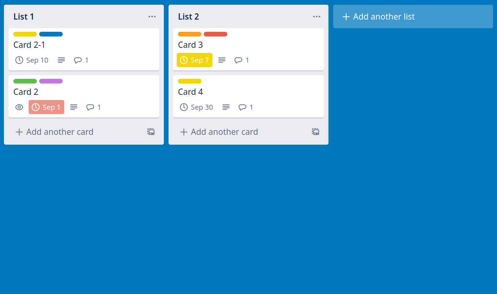
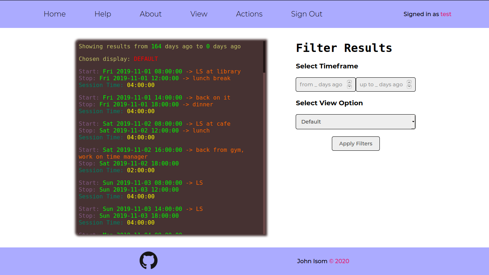

I’m a software engineer based in NYC & Salt Lake City.
I'm proficient with Git, GNU/Linux, Ruby,
Rails, React, Redux, JavaScript,
Node.js®, SQL, HTML & CSS, HTTP,
AWS Lambda, AWS IAM, and AWS Step Functions.
I recently built
Maestro, an
open-source easy-to-use framework for quickly bootstrapping and
iterating upon serverless orchestration workflows with AWS Lambdas and
AWS Step Functions.
The rise of serverless architectures and FaaS offerings such as AWS
Lambda has revolutionized how companies are developing modern apps.
The need for an orchestration layer over these architectures has
brought about services such as AWS Step Functions. However, deploying
apps that use Step Functions can be tedious and error-prone. Maestro
prioritizes speed and developer productivity by automating this
process so that the developer’s focus stays on developing their
application's business logic.
Maestro is an
open-source easy-to-use framework for quickly bootstrapping,
deploying, and rapidly iterating serverless orchestration (hence the
name) workflows and applications using Node.js® and AWS Step
Functions.
Maestro makes it easy to get started developing serverless
orchestration workflows. Plus, deploying is a breeze with Maestro.
Since Maestro also offers frictionless teardown, re-deploying is as
simple as tearing down and deploying again. Using Maestro aids
development not only in the initial phase of a project but throughout
maintaining and iterating on a project.
Just Postit, built with Bootstrap and Rails, is
a social app, inspired by Reddit, that allows authenticated
users to create, delete, edit, and view categories, posts, and
comments.

Reaction
Trello-like organization board
Reaction, built with React, Redux, and
Rails, is a productivity board, inspired by Trello,
that allows users to create, delete, edit, and view boards,
cards, and lists.

The Time Manager
Track and Intelligently View Your Hours
The Time Manager, using OOP-designed Ruby with
the Sinatra framework, facilitates tracking study/work
time so that the user can know exactly how many of their
precious hours are going to good use.